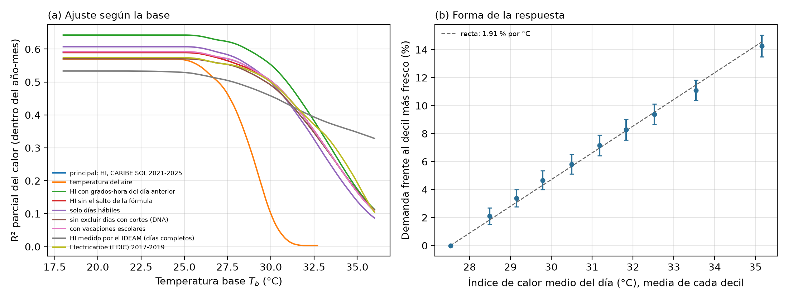

Temperatura base de los grados-hora#
La propuesta resume el efecto del calor sobre el consumo con grados-hora de enfriamiento sobre una temperatura base, \(CDH = \sum_h \max(0,\, HI_h - T_b)\) (Ecuación 2), y prevé estimar esa base con los datos, como hace el método PRISM con facturas mensuales. La base interviene en la regresión de grados-hora con que se comparará el modelo bottom-up (Fase 3) y en los grados-hora de las fases de El Niño y La Niña (El Niño y La Niña). Este capítulo explica cómo se estimó, qué resultó, cómo se lee desde el punto de vista térmico y qué puede estar mal en el análisis.
La conclusión es que la demanda agregada de la región no tiene una temperatura base dentro del clima de Barranquilla. La base que mejor ajusta queda por debajo de la hora más fresca del periodo, de modo que los datos solo fijan un tope, unos 25 °C de índice de calor, y la demanda crece de forma casi lineal con el calor en todo el rango observado, 1,9 % por cada °C de índice de calor medio del día.
Qué se espera desde la física del edificio#
En la teoría de los grados-día, la temperatura base no es la consigna del termostato, sino la temperatura de equilibrio del edificio, la temperatura exterior a la que las ganancias internas y solares compensan las pérdidas por la envolvente y la ventilación:
donde \(UA\) es la conductancia de la envolvente y \(\dot m c_p\) la de la ventilación. Como las ganancias son positivas, la base queda por debajo de la consigna, más cuanto mayores sean las ganancias y mejor aislada esté la vivienda. Tres razones hacen esperar en Barranquilla una base baja frente a su clima:
Noches cálidas. La temperatura exterior rara vez baja de 24 °C y el índice de calor rara vez de 25,5 °C. Con consignas de A/C habituales, de 22 a 26 °C, y con las ganancias de la noche (personas, nevera, iluminación y el calor que la masa del edificio acumuló de día), la vivienda puede necesitar enfriamiento a cualquier hora.
Equipos que responden a la temperatura sin umbral. La nevera, los congeladores y los ventiladores consumen más cuanto más calor hace, de forma gradual. El compresor de una nevera trabaja más horas cuando el ambiente es más cálido, sin un punto de encendido.
Agregación. La demanda de XM suma cientos de miles de usuarios con consignas, viviendas y hábitos distintos. Aunque cada hogar tuviera un umbral, la suma de muchos umbrales repartidos produce una curva suave, y si casi todos están por debajo del clima observado la curva agregada se ve como una recta.
Por eso una base agregada por debajo del rango observado es lo esperable, y no contradice que cada hogar encienda el A/C con un criterio de confort. Lo que mide este capítulo es la base del agregado, no la consigna de un equipo.
Datos#
Demanda. Demanda comercial diaria del mercado regulado CARIBE SOL (Air-e: Atlántico, Magdalena y La Guajira), 2021–2025, suma de las 24 horas de XM (XM). Se excluyen los mismos días que en la compuerta horaria (Respuesta horaria al calor): los que tienen alguna hora anómala y los que tienen demanda no atendida mayor que 0,5 % de la del mercado. Quedan 1.399 días. Para contrastar, se usó la demanda regulada de Electricaribe (agente EDIC, siete departamentos) en 2017–2019, con 931 días.
Clima. Índice de calor horario de ERA5-Land de GDEX en la celda de Barranquilla (Clima), con el mismo algoritmo de la NOAA que la compuerta. El día va de 00:00 a 24:00, hora local, igual que la demanda de XM.
Método#
Para cada base \(T_b\) de 18 a 36 °C, cada 0,1 °C, se ajusta
donde \(L_d\) es la demanda del día, \(\mathbf{t}_d\) indica el tipo de día (sábado; domingo o festivo; fin de año; Carnaval; Semana Santa) y \(\delta_{m(d)}\) es un efecto fijo de cada año-mes. Los efectos fijos absorben el crecimiento de la demanda, la estacionalidad y los cambios de mercado, de modo que \(\beta\) y la base salen solo de las diferencias de calor entre días del mismo mes. La base estimada es la de menor suma de cuadrados de los residuos (punto de quiebre). Como medida de ajuste se usa el R² parcial del calor, la fracción de la variación que queda después del calendario y de los efectos fijos y que explican los grados-hora.
El intervalo de la base se obtiene con 500 réplicas de un bootstrap por bloques de año-mes (semilla 42), que respeta la dependencia entre días del mismo mes y reestima los efectos fijos en cada réplica. Como contraste, se da también el intervalo del perfil de la suma de cuadrados, que no corrige la autocorrelación y es más estrecho de lo debido. El error estándar de la pendiente usa errores HAC de Newey-West con 7 rezagos, como la compuerta.
Para saber si la respuesta es lineal se hicieron cuatro pruebas con la variante principal:
la respuesta por deciles del índice de calor medio del día, con los mismos controles, que no impone ninguna forma;
un término cuadrático en el índice de calor medio;
dos pendientes en el índice de calor medio, con el corte que mejor ajusta;
dos bases en los grados-hora horarios, una por debajo de todas las horas y otra alta, que mide si las horas más calientes pesan más por grado que las demás.
En las dos últimas el corte se elige con los mismos datos, así que sus valores \(p\) son optimistas.
Resultados#


Figura 111 Temperatura base con la demanda diaria de XM. (a) R² parcial del calor según la base, por variante; (b) demanda por decil del índice de calor medio del día frente al decil más fresco, con su IC 95 % (HAC) y la recta del modelo lineal.#
Variante |
Días |
Hora más fresca (percentil 1) |
Cota superior de \(T_b\) |
R² parcial del calor |
Respuesta (% por °C del día) |
|---|---|---|---|---|---|
Índice de calor, CARIBE SOL 2021–2025 (principal) |
1.399 |
25,7 °C |
25,1 °C |
0,591 |
1,91 (IC 1,82–2,00) |
Temperatura del aire |
1.399 |
24,9 °C |
24,9 °C |
0,570 |
4,42 (IC 4,22–4,63) |
Con los grados-hora del día anterior |
1.399 |
25,7 °C |
25,2 °C |
0,643 |
|
Índice de calor sin el salto de la fórmula |
1.399 |
25,7 °C |
25,1 °C |
0,589 |
1,91 |
Solo días hábiles |
940 |
25,7 °C |
25,6 °C (perfil) |
0,607 |
1,95 |
Sin excluir los días con cortes |
1.605 |
25,7 °C |
25,5 °C (perfil) |
0,571 |
1,89 |
Con vacaciones escolares como control |
1.399 |
25,7 °C |
25,5 °C (perfil) |
0,592 |
1,91 |
Índice de calor medido por el IDEAM |
421 |
24,1 °C |
25,0 °C (perfil) |
0,533 |
1,14 |
Electricaribe (EDIC), 2017–2019 |
931 |
25,4 °C |
24,9 °C |
0,574 |
1,82 |
La base queda por debajo del rango observado. En todas las variantes la mejor base está por debajo de la hora más fresca (Tabla 72). Con una base así todas las horas cuentan, los grados-hora del día son \(24\,(\overline{HI}_d - T_b)\) y el ajuste es idéntico al de una regresión con el índice de calor medio del día (R² parcial de 0,591 en los dos casos). Por debajo de la hora más fresca la curva es plana (Figura 111a), porque cualquier base en ese tramo da el mismo ajuste, y por eso el valor puntual de la base (20,6 °C en la variante principal) no tiene significado. Solo la cota superior lo tiene: la base no supera unos 25 °C de índice de calor, que es casi la hora más fresca de la serie. La mitad de los días tiene su hora más fresca por encima de 27,1 °C, y solo 0,4 % de los días baja de 25,1 °C. Por encima de la cota el ajuste empeora de forma continua: el R² parcial baja a 0,587 con 26 °C, 0,575 con 27 °C, 0,537 con 29 °C y 0,504 con 30 °C.
La respuesta es casi lineal en todo el rango. Por deciles del índice de calor medio del día, la demanda sube entre 1,6 % y 2,2 % por °C en cada tramo, y ya sube 2,1 % por °C entre el decil más fresco (27,5 °C) y el siguiente (Figura 111b). No hay un tramo plano al comienzo, que es lo que mostraría una base dentro del rango. Con el índice de calor aparece una curvatura leve hacia abajo: el término cuadrático es negativo (\(p = 0{,}03\)), con dos pendientes el mejor corte está en 28,1 °C (3,5 % por °C por debajo y 1,8 % por encima), pero la ganancia de ajuste es de 0,07 puntos de R². En los grados-hora horarios, las horas por encima de 27 °C de índice de calor suman menos por grado que las demás. Con la temperatura del aire ninguna de estas pruebas es significativa (cuadrático, \(p = 0{,}22\); dos pendientes, \(p = 0{,}07\) optimista; horas sobre 30 °C, \(p = 0{,}26\)).
La curvatura con el índice de calor tiene una explicación sencilla. Con humedad alta, el índice de calor crece más rápido que la temperatura del aire a medida que esta sube, de modo que un grado de índice de calor al mediodía equivale a menos temperatura que un grado de noche. Si la demanda es lineal en la temperatura del aire, como indican las pruebas, en el índice de calor se ve levemente cóncava. La curvatura no indica saturación de los equipos.
Parte de la respuesta llega al día siguiente. Sumar los grados-hora del día anterior sube el R² parcial de 0,591 a 0,643. Es coherente con la inercia térmica (la masa de la vivienda devuelve de noche el calor del día) y con el clima, porque los días calientes suelen venir seguidos. La cota de la base no cambia.
Las variantes no cambian la conclusión. Ni el índice de calor sin el salto de la fórmula de la NOAA, ni los días hábiles, ni los días con cortes, ni las vacaciones escolares, ni Electricaribe en otro periodo y con otra área mueven la cota más de medio grado, y la respuesta queda entre 1,8 % y 1,95 % por °C. Con el IDEAM la respuesta es menor, 1,14 % por °C, porque la estación tiene más dispersión de un día a otro (al mediodía llega a índices de calor de más de 50 °C, que parecen errores de la humedad) y eso atenúa la pendiente. Solo tiene 421 días completos, pero también deja la base por debajo de 25 °C.
Revisión crítica#
Riesgo |
Por qué importa |
Qué se hizo |
Resultado |
|---|---|---|---|
La base no está identificada por debajo del mínimo observado |
Ningún dato informa qué pasa con temperaturas que no ocurren |
Se reporta solo la cota superior, no el valor puntual |
La afirmación se limita a que no hay base dentro del rango |
Forma impuesta por el modelo con una sola base |
Un modelo de una base no puede mostrar una curva convexa o con dos tramos |
Deciles, término cuadrático, dos pendientes y dos bases horarias |
Casi lineal; curvatura leve en el índice de calor que desaparece con la temperatura del aire |
Autocorrelación entre días |
Intervalos demasiado estrechos |
Bootstrap por bloques de año-mes y errores HAC |
Cota de 25,1 °C con el bootstrap, frente a 25,5 °C del perfil sin corregir |
Valores \(p\) con el corte elegido en los datos |
Se sobrestima la evidencia de un cambio de pendiente |
Se declaran optimistas y se mira la ganancia de ajuste |
La ganancia es de 0,07 puntos de R² o menos |
Exclusión de días con cortes |
Los cortes pueden ser más frecuentes en días calientes y sesgar la respuesta |
Variante sin excluirlos |
Cota y respuesta casi iguales |
Error de medida del clima (una celda de reanálisis para tres departamentos) |
Atenúa la pendiente y suaviza un quiebre, que podría ocultar una base |
Variantes con Electricaribe (siete departamentos) y con la estación del IDEAM |
La base sigue por debajo del rango. El error de medida puede reducir la pendiente, pero no crear una respuesta en el decil más fresco si no la hubiera |
Sesgo del reanálisis |
La base queda en la escala de ERA5-Land |
La cota la fijan las horas de la noche, donde el sesgo frente al IDEAM es de +0,35 °C (Clima) |
En la escala medida, la cota sería unas décimas de grado menor. El sesgo del mediodía (−2 °C) no la afecta |
Salto del índice de calor cerca de 26,7 °C |
Cae justo en la zona de la cota |
Variante con las dos fórmulas mezcladas en ±1 °F del umbral |
Sin cambios |
Calendario incompleto |
Las vacaciones podrían coincidir con el calor dentro del mes |
Variante con vacaciones escolares |
Sin cambios |
Carga no residencial |
El mercado regulado incluye comercio pequeño, también con A/C |
No se puede separar con XM |
Es la base del mercado regulado, no la de los hogares. La de los hogares por estrato solo puede verse con el SUI mensual, donde queda mal identificada |
Otras variables del tiempo |
Un día fresco suele ser nublado o lluvioso, con más iluminación o más gente en casa |
No se controlan |
Sesgo probablemente pequeño frente al del calor, sin evaluar |
Desde el punto de vista térmico, el resultado es coherente con la ecuación de la temperatura de equilibrio. Con noches que casi nunca bajan de 25 °C de índice de calor y ganancias internas todo el día, la temperatura de equilibrio de casi cualquier vivienda queda por debajo del clima observado. El efecto del día anterior es el que se espera de la masa térmica. La concavidad en el índice de calor se explica por la forma de ese índice y no por los equipos. Ningún resultado pide una física distinta de la del modelo.
Comparación con la estimación mensual#
Con el consumo mensual del SUI por estrato (fase2/clima/scripts/04_cdh_sui.py) el R² cambiaba poco entre 24 y 32 °C, con el máximo entre 28,5 y 30,5 °C. Ese análisis no tiene efecto fijo de mes, de modo que los grados-hora con base alta capturan también la estacionalidad del consumo, y con unos 120 meses y poca variación del calor la base no se distingue. La estimación diaria, con efectos fijos de año-mes, compara días del mismo mes y tiene diez veces más observaciones, así que es la que se adopta. La diferencia no es una contradicción, porque la mensual nunca identificó la base.
Qué usa la tesis#
Regresión de grados-hora de referencia (Fase 3). Se usará el índice de calor medio (o grados-hora con base de 25 °C o menos, que es lo mismo) en lugar de fijar una base dentro del rango, con los grados-hora del día anterior como término adicional.
Patrón empírico para el modelo bottom-up. El modelo calibrado debería reproducir una respuesta agregada sin umbral dentro del rango, de unos 1,9 % por °C de índice de calor medio diario, y una parte que llega al día siguiente. Es un contraste útil porque el modelo no se calibra con esta serie diaria.
Fases de El Niño y La Niña. La base de 26,5 °C de ese capítulo queda algo por encima de la cota (R² parcial de 0,581 frente a 0,591). Allí solo describe anomalías relativas entre fases, así que no se cambia, y queda declarada.
Lo que no se puede decir. Esta base es la del mercado regulado de la región. No es la consigna de los equipos de A/C ni la base de cada estrato. En el modelo, la decisión de encender el A/C depende del índice de calor interior y de la consigna, que se calibran con las encuestas y con el SUI.
Reproducción#
fase2/clima/scripts/08_temperatura_base_xm.py, con el entorno de la compuerta horaria (que tiene holidays), tarda unos 2 minutos. Usa la serie horaria de clima del paso 1 de fase2/clima y las funciones y los datos procesados de XM de la compuerta (03_estimar.py, comun.py). Salidas en fase2/clima/salidas/:
tbase_xm_perfil.csv: suma de cuadrados, R² parcial y pendiente para cada base y variante;tbase_xm_forma.csv: respuesta por decil del índice de calor y de la temperatura del aire, con su IC 95 % HAC;tbase_xm_resumen.json: base, cotas, intervalos y pruebas de forma;tbase_xm_perfil.png: la figura de este capítulo (copiada enfiguras/tbase_xm.png).